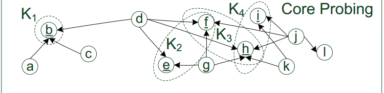
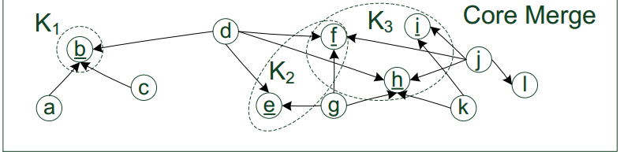
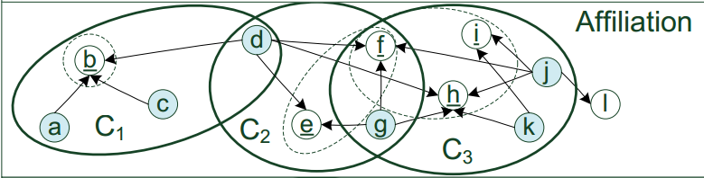
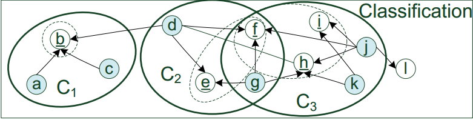
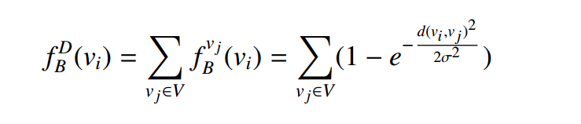
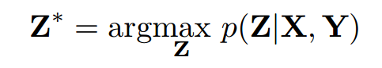
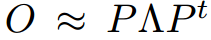

Title: 多层网络聚落检测综述
Date: 2016-3-14
Author: sndnyang
Slug: multi_layer_cd_suver
Category: 研究
tags: 论文, 多目标进化算法, 群落检测
[TOC]
摘要
Community Detection in Multi-Layer Graphs: A Survey
本文介绍多层网络下聚落检测问题， 并对相应算法做综述
导论 - 过
背景知识
群落/社区 community
- densely-connected components/subgraph
- relative/similar
比如：
- 同校、 同系、 同班是一个 community
- 同一个社团、 公司
- 同一领域的研究
多层网络模型
关系的不同方面就可以表达成多个独立图组成的多层图， 里面的每个、每层图就代表了一个方面
比如：
- 同学关系
- 微信好友
- 微博好友
单层图定义
- a weighted graph (V,w)
- V is a set of vertices
- w is a set of edge weights: (V × V ) → [0,1].
点映射(图层之间)
- node mapping is a function
- from a graph layer L1 = (V1 ,w1 ) to another graph layer L2 = (V2 ,w2 )
- V1 × V2 → [0,1].
- For each u ∈ V 1 , the set C(u) = {v ∈ V2 |f(u,v) > 0} is the set of V2 vertices corresponding to u.
对于一个facebook上的账号（个人）：
- twitter 上没有账号
- twitter 上只有一个号--pillar(柱型) multi-layer graph
- twitter 上多个号
多层图定义
- a tuple MLN = (L1 ,...,Ll ,IM)
- where Li = (Vi ,wi ),i ∈ 1,...,l are graph layers
- IM (Identity Mapping) is an l ×l matrix of node mappings, with $ IM_{i,j} : V_i ×V_j → [0,1] $
例：
- 症状
- 疾病名
- 细菌、病毒或基因
信息网络定义：
- 是个有向图，
- 存在“点”到“点类别” 的函数映射
- 及 “边”到“关系(边)类别”的函数映射
异构信息网络
Heterogeneous Information Networks
点的类别 或 关系的类别个数大于1的信息网络。
异构信息网络与多层网络模型 等价
但强调不太相同
heterogeneous information networks emphasize heterogeneous types of entities connected by different relationships
主要方法
分类
- 聚类扩展 cluster expansion
- 矩阵分解 matrix factorization
- 统一距离？ unified distance
- 基于概率模型 model based
- 模式挖掘 pattern mining
- 图合并 graph merging
特点
- 多数只支持两层图
- 一层是图的原始拓扑结构信息
- 其他层一般是利用点的属性信息来计算相似度
聚类扩展
Cluster Expansion
论文： Scalable community discovery on textual data with relations
基于关系（文章引用）与文本属性
针对的问题
大型文档语料 -- large cocument corpus
- 没有同时考虑 textual attribute 和 relations(文献里的引用？)
- 大数据集的可扩展性scalability
- 多数算法基于一堆要（人工）设定的参数
思路
非监督方法
- 快速地找到初始的核， 作为群落的种子
- 核进行扩展（或合并merge)， 扩展成群落，（提高scalability)
cores dictate the formation and topics of communities
核 用来表示 社区的构造和主题
步骤
4 steps:
- core probing
- core merging, 根据主题相似度进行合并
- affiliation, 利用关系信息，将core扩展成初始社区
- classification， 主题不相关的成员从社区中移除
第一步 Core Probing
基本思想
co-occurrence analysis: multiple objects are linked simultaneously by others, they are more likely to be able to define a coherent topic scope
prob 步骤
- 生成每个点的outgoing relations
- 用关联规则来计算频繁项集(Apriori)

与 Apriori 的不同点
- 不使用固定的过滤阈值， 根据项集的长度决定阈值
- 项集存在包含关系，如果项集 S1 和 S2存在 $ S1 S2 $, 不保留S1
core merging
保证了合并后核的高度一致性， 不受过滤阈值的影响
证明过程略
步骤
输入参数: core probing 返回的核
迭代：
- 对S中任意一对核Ki, Kj， 如果重叠， 转2
- 计算p-min, p-max, p-
- 如果 Ki, Kj的交集不为空，且 pi- 或 pj- 属于 该交集， 转4
- 从S 中移除Ki, 和 Kj, 加入Ki,Kj的并集。
- 如果遍历完， S 没有变化， 则退出
计算 p-min, p-max, p-
- p-min, pmax: 在特征空间内， 为 core生成了边界框
- p- : 中心
图示：
Affiliation Propagation
完成cores probe后，剩余的点作为 affiliated members
初始化社区C = 找到的核K ， 迭代处理：
- 对K中的每个点d，把所有的、其他的、能连到d的点u 加到C中
- 设定迭代次数， 避免关系环
- 或迭代中 没有新的点加入
相关概念
好像没什么用
- 两个社区的公共成员则为 interdisciplinary member
- 点和社区间的相近度(closeness)用迭代时的次数代表
Intra-Community Classification
只根据relation找到的社区 很可能误判(false hits)
要根据属性分析， 将当前的C 划分成两个集合， C' 和 C-
步骤
- 核K 视作是 positive example正例， 即肯定属于这个社区
- 选择社区C的核K（正例） 和 其他社区的核（negative example)
- 将所有点转换成 特征向量（feature vector）来代表它们的topical position
- 使用 LDA（Latent Dirichlet Allocation）来降维
- 使用某种分类器（SVM），将负标签的点都移除
图示

  
主要贡献
- 用关联规则、频繁项集来初始化
统一距离
Unified Distance
structural and attribute similarities using a unified distance measure
SA-Cluster
步骤
- 建立统一距离度量， 新的图
- 用新的图 进行聚类， 类k-means
unified distance measure
基于属性增广图(attribute-argmented graph), 使用Random Walk with Restart (RWR)
邻点随机游走距离 Neighborhood Random Walk Distance
- l as the length that a random walk can go
- c ∈ (0, 1) as the restart probability
attribute-argmented graph
- 添加属性点（attribute vertices），代表属性的值。
- 原始的点连接到对应的属性点上
- 两点上共同的属性点越多， 两点相似度直觉上就越高。
聚类算法
利用unified distance measure， 进行 k-medoids clustering（类似 k-means）
- 选择每个聚簇(cluster)最中心的点
- 其余点分配给最近的中心点。
- 迭代， 调整边的权重
聚类中心初始化
思想： 从vi走 l 步能到的点越多， vi越可能是中心
- 计算点的密度函数： 
- 降序排列， 选择前k点作为聚类中心
聚类过程
- 分配点到最近的中心，即有最大random walk distance的中心点
- 对每个cluster ,用随机游走距离 计算“平均点”
- 寻找新的中心点，距“平均点”最近
- 不停迭代， 直到 聚类目标函数 收敛
聚类目标函数
目标是最大化
问题转化
有以上的目标函数后， 可转化成三个子问题
- 聚类分配
- 中心更新
- 权重调整
权重自我调整
在每次迭代时， 进行权重调整
属性 ai 权重在第t+1次迭代的计算公式为：
投票机制 majority voting mechanism
counts the number of vertices within clusters that share the same attribute values with the centroids on ai
主要贡献
- 一个统一的距离评估方式， 将结构和属性相似度结合
- 带权重的自调整方法， 调节结构属性相似度的重要度
基于模型方法
Model-Based Method
model-based community detection approach based on both structural and attribute aspects of a graph
步骤关键点
- 概率模型的构建， 结合结构和属性信息， 不使用人工定义的距离
- 变分法(variational approach)解决模型
构建概率模型
聚类属性图定义：
- X: n x n 的邻接矩阵
- Y: n x t 的属性矩阵
- Z: n x 1 的聚类向量， 即每个点所属的聚类
目标：
求最优化：
其中
联合概率分布
- alpha - 每个聚类的点分布（vertex distribution)
- theta - 属性分布(attribute distribution)
- phi - 类间 边出现概率(edge occurrence prob)
两大问题
- Z 的N个变量最大化 计算量过大， 全局最优基本不可能
- 计算Z的后验概率分布时， 不存在 p(Z|X,Y)的closed-form expression
变分法 variational algorithm
使用variational distribution q(α, θ, φ, Z) 来逼近原分布
并且对 variational distribution 作限制
全局最优就转成求局部最优
两个新问题
- 如何定义the family of variational distributions
- 如何从中找出最优分布， 最接近p(α, θ, φ, Z|X, Y)
Parametric Family
Optimizing Variational Parameters
measure the distance between a variational distribution q(α, θ, φ, Z) and the true posterior p(α, θ, φ, Z|X, Y)
等价于 最大化
关系式：
图合并
Graph Merging
combine structural and attribute information using the graph merging process
CODICIL
步骤
- 创建内容边 create content edges
- 边组合 combining edges
- 边采样 sampling edges with bias
- 聚类 clustering
creating content edges
- 对每个点vi, 用cosine相似度， 计算k 内容最近邻
- 在vi 和 k近邻间 建立content edges
combining edges
将新创建的content edges 和 初始的拓扑边集进行简单的联合(unified)
sampling edges with bias
对每个点 vi， 从邻点选择要保留的边， 通过 cosine 相似度或Jaccard 相似度
clustering
因为图合并部分独立于community detection， 所以任意 community detection 都可以，
这块不是本文的重点
主要贡献
通过 用内容信息消除连接结构里的噪音， 来强化社区信号
矩阵分解
Matrix Factorization
论文： Community Detection with Edge Content in Social Media Networks
Edge-Induced Matrix Factorization
主要idea
- 通过从多层图中抽取相同因子(common factors)
- 把不同信息进行结合
- 使用通用的聚类方法处理
方法
- 使用 低秩矩阵因子分解(low-rank matrix factorization) 来逼近目标矩阵O， 
- P: n x n 的特征矩阵
- lambda(大写的？): n x n 特征值矩阵
目标
对于多个目标矩阵O^i, i = 1,-,l
要算出一个common factor matrix
求最小化：
- P: n x n的所有层 公因子矩阵
- Λ^i: n x n 矩阵， 第i层的特征
- || ·|| is the Frobenius norm
- α: regularization 参数
全局转局部最优
迭代处理：
- 固定P , 优化 Λ^i
- 固定Λ^i , 优化 P
- 直到 收敛
模式挖掘
Pattern Mining
Coherent Closed Quasi-Clique Discovery from Large Dense Graph Databases
Cocain
方法
子图挖掘算法， 搜索多层图中频率高于某给定阈值的 quasi-cliques
基础定义
gamma(γ)-Quasi-clique
cross-graph quasi-clique:
a set of vertices
- belonging to a quasi-clique
- appears on all layers
- must be the maximal set
Edge Cut, Edge Connectivity
- edge cut is a set of edges Ec such that G'=(V ,E-Ec) is disconnected
- A minimum cut is the smallest set among all edge cuts.
- The edge connectivity of G, denoted by κ(G), is the size of the minimum cut
coherent subgraph: a subgraph that satisfies a minimum cut bound
gamma(γ)-Isomorphism 同构
若两个图G1, G2是 gamma同构， 当且仅当：
- 都是 γgamma-quasi-cliques
- 点个数相同
- 存在 biject f:V1->V2, 对V1中的每个点v, 满足F1(v) = F2(f(v))
multiset
- 点的标签的集合(a bag of vertex labels)
- 忽略顺序
- 突出多样性
- 定义为 M(G)， G的multiset
string of a graph
Given a k-graph g, any sequence of all elements in M(g)
给定 k-graph g, M(g)的任意一种序列
canonical form of a graph
the minimum string among all its strings and denoted by CF(G)
图的最小 string, 记作 CF(G)
有引理：
两个γ-quasi-cliques Q1 Q2 是γ同构， 当且仅当 CF(Q1) = CF(Q2)
步骤
- 将子图转成 canonical forms
- 枚举γ-quasi-cliques可行解(feasible candidate for γ-quasi-cliques), 用DFS策略进行剪枝
- 基于 闭包检查规划(closure-checking scheme)， 选择出闭包的 γ-quasi-cliques
枚举策略
- 枚举树
- 满足： 子代必须能归入祖先
关键：
对每个 quasi-clique Q, 处理完它的子代后， 进行闭包检查
主要贡献
find cross-graph quasi-cliques in a multi-layer graph that are frequent, coherent, and closed
另一篇模式挖掘
论文
论文： Mining Coherent Subgraphs in Multi-Layer Graphs with Edge Labels
本文贡献
- 提出了带边标签的多层图聚类的新范式
- 提出了MLCS, 避免了结果集的冗余
- 提出了最好优先搜索算法MiMAG 来求MLCS聚类的近似解
multi-layer coherent subgraph (MLCS) model
clusters of vertices that are densely connected by edges with similar labels in a subset of the graph layers
找聚类， 满足条件：在某层的图中，不仅边的密度高，且具有相似的标签。
the edge labels represent characteristics of the relations
quasi-clique
One-dimensional MLCS cluster
One-dimensional MLCS cluster
某一图（层）的点集满足以下条件：
- 形成一个 0.5-quasi-clique
- 点集的每条边的两个顶点： dist(l_i(x), l_i(y)) <= w, edge label 为连续值时需要w, 不然置为0.
多层 MLCS cluster
冗余关系 redundancey relation
MiMAG 算法
Mining Multi-layered, Attributed Graphs
计算出最大化、 无冗余、 高质量（不是最优质量）的聚类
基于寻找quasi-cliques的快速算法。
总结
- Apriori 频繁项集的， 特例或通用
- 随机游走
- 概率模型
- 矩阵分解
- clique
community 没有严格定义
未来研究方向
通用多层图的适应性
General multi-layer graph applicability
当前算法一般仅研究了 pillar(柱形)多层图
现实世界不保证不同层之间正好一一对应
所以现有算法的泛化， 对通用多层图的适应性非常有意义
多层图的不确定性
Uncertainty in multi-layer graphs
现有的研究都假定 图数据已经清理完毕， 缺少噪音、歧义的研究
constructing multi-layer graphs with entity resolution and/or trustworthy analysis certainly enhances the quality of the community detection process
可扩展性问题
所以可能要考虑并行及分布式之类的方法
或是对多层图的特征向量矩阵（feature-vector matrices）进行采样
Temporal analysis
图是随时间变化的。
目前存在一些对单层图的时间变化的研究， 但基本不可用于多层图